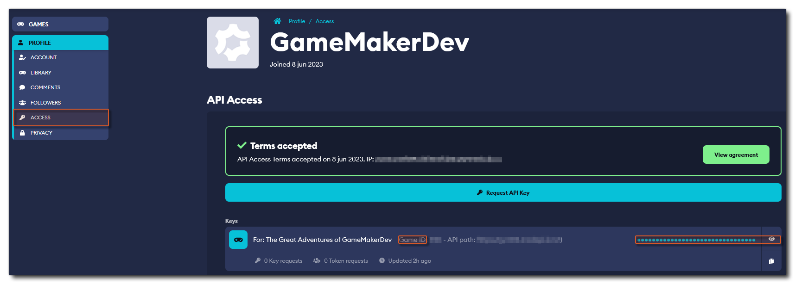
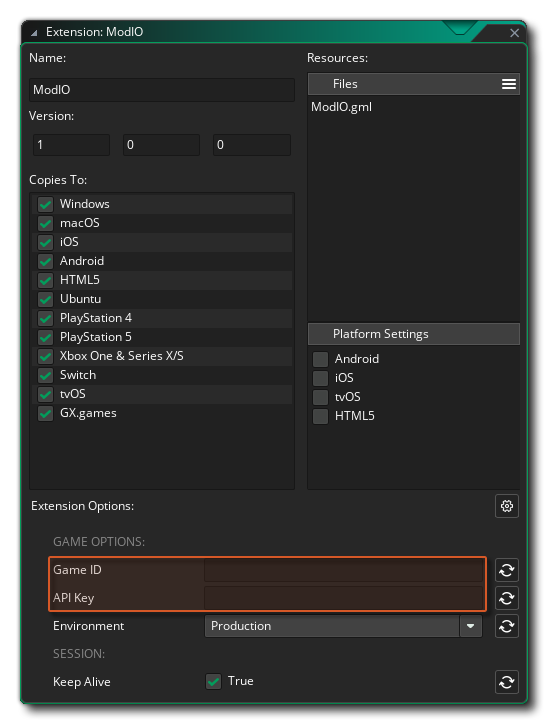

Quick Start Guide
This page contains an overview on how to get started with the mod.io extension for GameMaker.
Overview
You should do the following things before calling any of the extension functions:
- Add the extensions that you wish to support for authentication to your GameMaker project
- Set up the extension options for your game: add the game's ID and its API key
- Using the mod.io extension:
- Authenticate the user to mod.io using one of the Authentication functions
- Use the
modio_*functions to add mods, upload modfiles to your game, retrieve info about mods, get mod stats, etc.
Add Extensions for Authentication
Depending on the authentication method(s) you want to allow users to authenticate with, you have to add the appropriate extension to your GameMaker project.
The Authentication page contains the full reference of authentication functions and more detailed information on how to get authenticated.
Currently supported are:
- Epic Online Services
- GOG
- GoogleSignIn
- Steamworks
- Guest
Extension Setup
After you've added your game to mod.io you can get its Game ID and API key under Profile > Access > API Access:

Copy the game ID to the GameID and the API key to the ApiKey extension option respectively:

Note
Most of the modio_* functions take the game ID as an optional parameter. If you provide it here, it will be used in all the functions.
Here you can also set whether to use the Production or the Test environment and whether to Keep Alive the session.
Using the Extension
Authentication
See the Authentication functions for a full list and code examples on how to authenticate on each platform.
Usage
After these steps, the extension functions can be used to communicate with mod.io using the API.